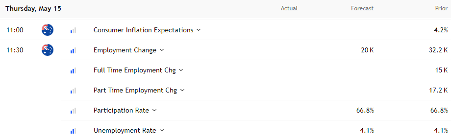

Gold Tumbles, AUD/USD Reverses as USD Rebounds on Trade Talk Reports
Published: May 15, 2024 "Markets move on headlines—but they trade on data." — Wall Street Adage
The US dollar staged a sharp rebound Wednesday after reports suggested currency agreements are off the table in US trade negotiations, easing fears of deliberate dollar weakening. Meanwhile, gold broke below $3,200 as rising real yields and easing geopolitical tensions dented safe-haven demand. Here’s what happened—and what’s next for FX, gold, and key economic data.
Key Market Moves (May 15, 2024)
| Asset | Price Action | Key Level Broken |
|---|---|---|
| US Dollar (DXY) | +0.4% | Rebounds from 3-week low |
| AUD/USD | -0.6% | Rejected at 200DMA (.6500) |
| Gold (XAU/USD) | -1.2% | Breaches $3,200 support |
| 10-Year Treasury Yield | +5 bps | Nears April highs (~4.60%) |
Why the Dollar Rebounded
1. Trade Talk Headlines Lift USD
- Bloomberg reported the US isn’t seeking currency commitments in trade deals.
- Treasury Secretary Scott Bessent is handling FX policy directly, sidelining trade negotiators.
- Market Impact: Eases fears of a coordinated dollar devaluation.
2. Asian FX Tells a Different Story
- Despite the USD bounce, Asian currencies (KRW, TWD) remain strong, suggesting:
- ✔ Traders still suspect currency concessions in US trade deals.
- ✔ Skepticism lingers about long-term dollar strength amid fiscal concerns.
"The dollar’s rally feels like a short squeeze—not a trend reversal."
AUD/USD: Jobs Data Looms After 200DMA Rejection
Technical Breakdown
- Failed breakout at 200-day moving average (.6500).
- Now testing .6430 (50% retracement of Sept-April drop).
- Bias: Sell rallies until .6500 breaks.
What to Watch in Aussie Jobs Data
- Unemployment rate (Key): A rise could cement RBA rate cuts.
- Market expects: 25bps cut in June (fully priced).
- Risk: Weak data may revive bets for more aggressive easing (3 cuts priced for 2024 vs. 5 previously).
Gold’s Breakdown: 3 Bearish Catalysts
-
Rising Real Yields
- 10-year TIPS yield hits 2.15%, highest since November.
- Gold hates higher real rates (no yield vs. bonds).
-
Easing Geopolitical Risks
- Trump’s Middle East diplomacy reduces safe-haven demand.
-
Technical Damage
- Break below $3,200 opens path to $3,057 (50DMA).
- Resistance now at $3,270.
"Gold bulls need a Fed pivot or new crisis—neither seems imminent."
Next Big Test: US PPI & Retail Sales
Why It Matters
- PPI = Leading indicator for core PCE (Fed’s favorite inflation gauge).
- Watch for tariff distortions in:
- Core goods PPI (Supply chain impacts).
- Retail sales ex-autos/gas (True consumer demand).
Market Expectations
| Data Point | Forecast | Potential USD Impact |
|---|---|---|
| PPI (MoM) | +0.3% | Stronger = Hawkish Fed |
| Retail Sales | +0.4% | Weakness = Rate cut bets |
Trading Takeaways
FX
- USD: Short-term bounce, but long-term doubts remain.
- AUD/USD: Sell rallies unless .6500 breaks.
Gold
- Bearish below $3,200; next support at $3,057.
- Reversal needs: Softer US data or renewed Middle East tensions.
Macro Risks Ahead
- Fed speakers could counter/double down on rate-cut expectations.
- US-China/EU trade talks may reignite currency volatility.
Final Thought: Data Over Headlines
Today’s moves highlight how fast markets react to rumors—but sustained trends need hard data. Watch tonight’s Aussie jobs report and US PPI for confirmation.
"Trade the noise, but invest the facts."
This is not financial advice.